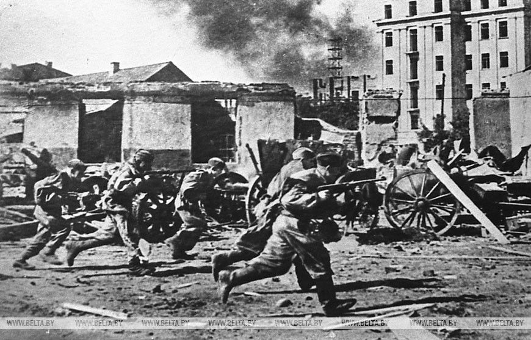
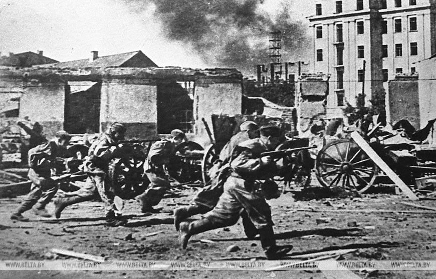
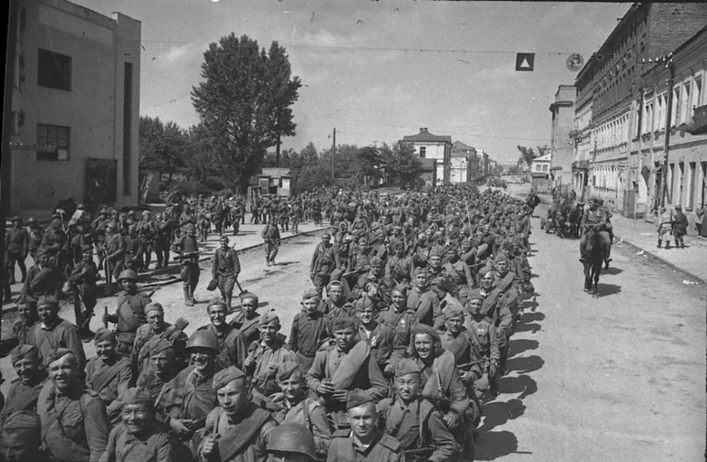
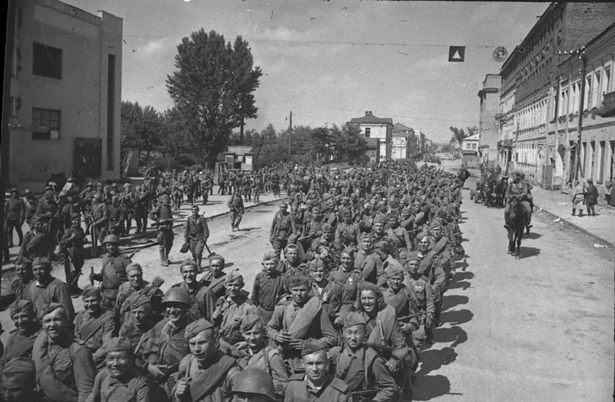

Вялікая Айчынная вайна
Памяць аб героях
Гэтае відэа прысвечана 80-годдзю вызвалення Беларусі ад нямецка-фашысцкіх захопнікаў. Мы ўспамінаем вялікія старонкі гісторыі і ўшаноўваем герояў, якія змагаліся за свабоду Радзімы.
Беларусь заўсёды будзе памятаць сваіх абаронцаў і перадаваць памяць аб подзвігах з пакалення ў пакаленне. Гэты ролік - даніна павагі героям і сімвал нашай падзякі.
Хроніка вызвалення Беларусі
Гэтае відэа прысвечана вызваленню Беларусі ад акупацыі нямецка-фашчысткімі захопнікамі, у тым ліку гераічным падзеям 1943-1944 гадоў.


 

 

Гісторыя вызвалення Беларусі
Вялікая Айчынная вайна, якая пачалася 22 чэрвеня 1941 года, стала адным з самых трагічных перыядаў у гісторыі Беларусі. З першых дзён вайны беларуская зямля аказалася ў цэнтры жорсткіх бітваў. Нацысцкая Германія, імкнучыся да вокамгненной перамогі, уварвалася на тэрыторыю Савецкага Саюза, зрабіўшы Беларусь адной з першых мішэняў сваёй агрэсіі. Акупацыя прывяла да вялізных чалавечых і матэрыяльных страт: разбурэння гарадоў і вёсак, масавага знішчэння мірнага насельніцтва, рабаванняў і гвалту. Беларусь стала адной з найбольш пацярпелых рэспублік, страціўшы мільёны жыццяў.
Аднак беларусы не змірыліся з акупацыяй. Ужо ў першыя дні вайны пачаўся супраціў: ствараліся партызанскія атрады, якія вялі актыўную барацьбу з ворагам. Сотні смелых людзей, нягледзячы на смяротную небяспеку, далучаліся да партызанскага руху. Яны ладзілі дыверсіі на чыгунках, знішчалі варожыя склады, перадавалі савецкім войскам звесткі аб перамяшчэннях ворага. Кожная паспяховая аперацыя ўзнімала дух народа і набліжала доўгачаканае вызваленне.
Вызваленне Беларусі стала гераічнай старонкай у гісторыі краіны і кульмінацыяй трохгадовай барацьбы супраць гітлераўскіх акупантаў. У 2023-2024 гадах адзначаецца 80-годдзе пачатку гэтай вызваленчай місіі. Знакавай падзеяй стала 23 верасня 1943 года - дзень, калі пачаўся доўгі і гераічны працэс вызвалення беларускай зямлі. З гэтага часу да зімы 1944 года Чырвоная Армія вызваліла 36 раённых цэнтраў і два абласныя: Гомель і Мазыр.
Ключавым этапам барацьбы за свабоду Беларусі стала аперацыя «Баграціён», юбілей якой адзначаецца ў 2024 годзе. Гэтая стратэгічная наступальная аперацыя, праведзеная ў чэрвені-ліпені 1944 года, завяршылася поўным вызваленнем тэрыторыі рэспублікі. Адной з самых значных падзей стала вызваленне Мінска 3 ліпеня 1944 года, што азнаменавала заканчэнне нямецкай акупацыі.
Падчас разлютаваных баёў савецкія салдаты праяўлялі гераізм і стойкасць. Кожная вуліца, кожны дом станавіліся арэнай жорсткага супраціўлення. Гомель, вызвалены адным з першых, стаў сімвалам мужнасці і стойкасці. Горад перажыў разбурэнне і боль страт, але яго жыхары не зламаліся. Яны аб'ядналіся дзеля аднаўлення сваіх дамоў, вуліц і прадпрыемстваў, адрадзіўшы родную зямлю з руін.
Аднаўленне Гомеля стала не толькі фізічным працэсам, але і актам духоўнага адраджэння. Жыхары, якія страцілі блізкіх і дамы, працавалі, натхнёныя агульнай мэтай - вярнуць жыццё на сваю зямлю. Гомель стаў не толькі эканамічным і культурным цэнтрам, але і сімвалам перамогі над фашызмам, прыкладам сілы духу і адзінства народа.
Сёння, адзначаючы гадавіну вызвалення Гомеля, мы ўзгадваем гераізм і самаахвярнасць тых, хто змагаўся за нашу свабоду. Памяць аб мільёнах жыццяў, аддадзеных за радзіму, назаўжды застанецца ў сэрцах беларусаў. Вызваленне Гомеля стала важнай вяхой у гісторыі барацьбы за незалежнасць і напамінам аб тым, як адзінства і любоў да роднай зямлі могуць пераадолець самыя цяжкія выпрабаванні.
Мы абавязаны захаваць гэтую памяць і перадаць яе наступным пакаленням, каб яны ўсведамлялі каштоўнасць міру і свабоды. Вызваленне Беларусі — гэта не проста гістарычны факт, гэта сімвал стойкасці народа і імкнення да светлай будучыні.